腿长按整机，履带与装甲按钻机
你指出上一张腿部稿仍与钻机、整机不一致，腿长也错误。R9长小腿稿撤回，本轮实际重绘腿部细图。先固定膝、踝、脚底的关系，再整理前后带面、白甲和轮组；没有以裁图代替重绘。
勇拳：保留原头，由轰炸机加载面罩
完整人形、原头、长发、肩甲与冲击拳套保留。社勇王的面罩总成收在轰炸机内部，合体时再加载到勇拳头上。它不是勇拳自身长出或展开的冠甲；拳甲强化仍是另一件事。

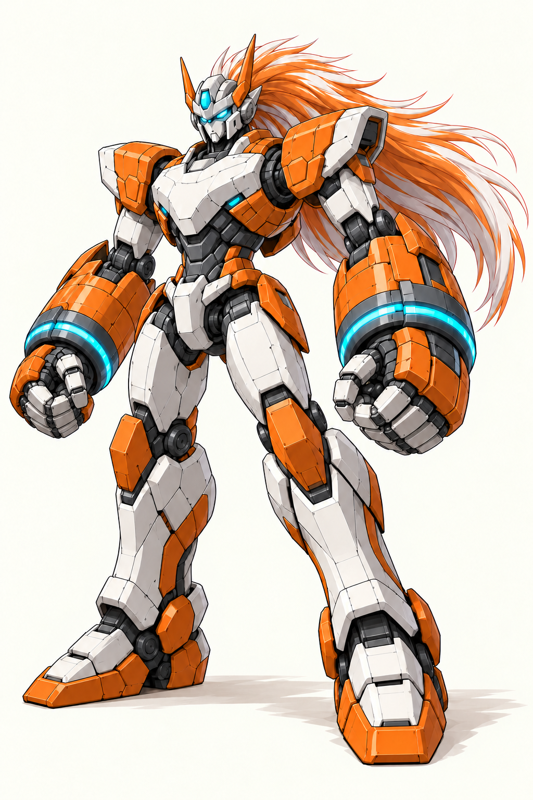

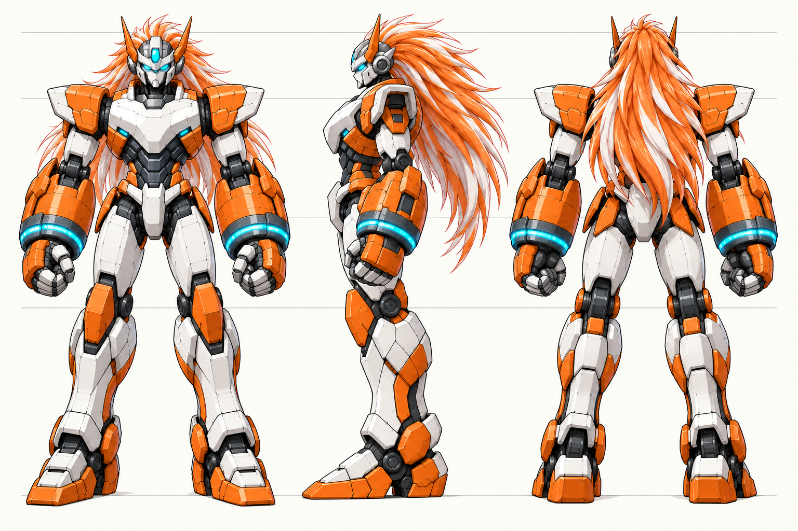
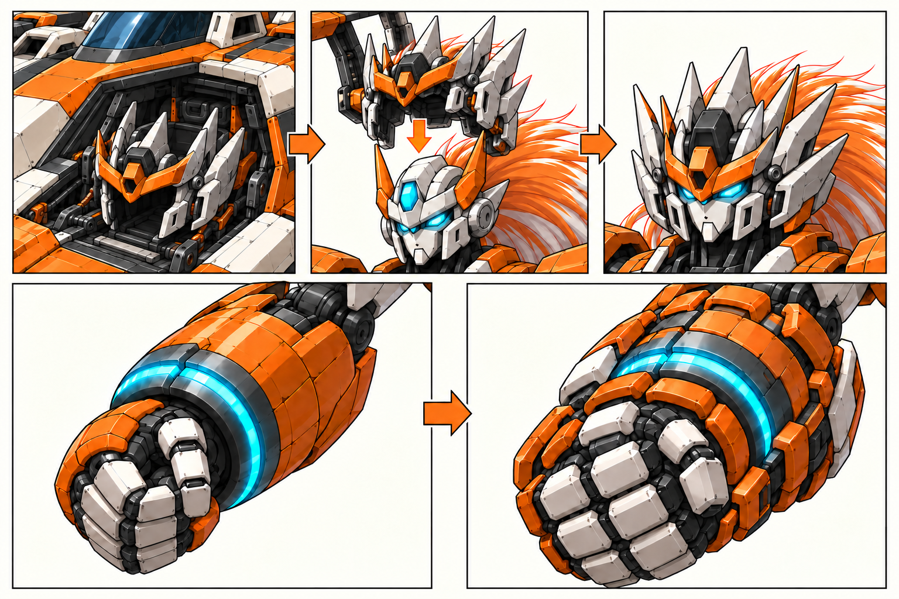
轰炸机：内部携带面罩，外部形成胸背与肩翼
中央机身内部另有面罩收纳舱，合体时由导架送到勇拳头部。单体外观继续保留钝机鼻、双竖翼与橙白石墨分色；两侧翼架独立连接，给核心肩关节留出活动空间。

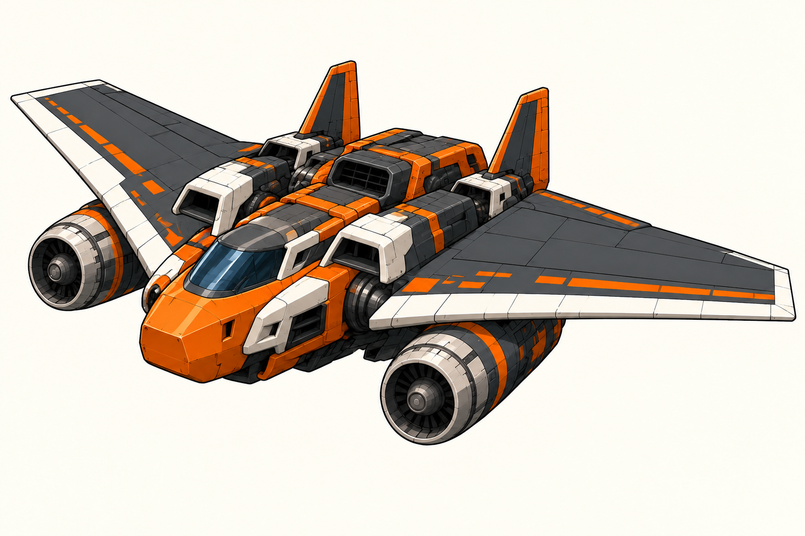

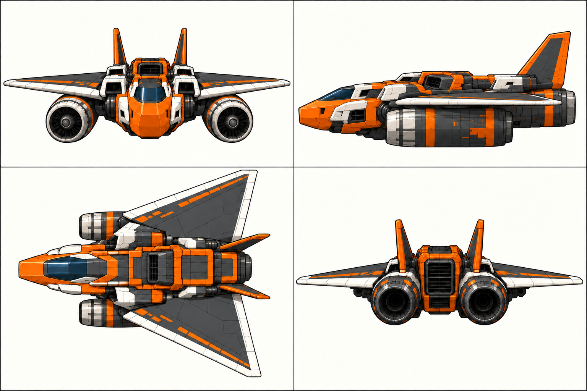
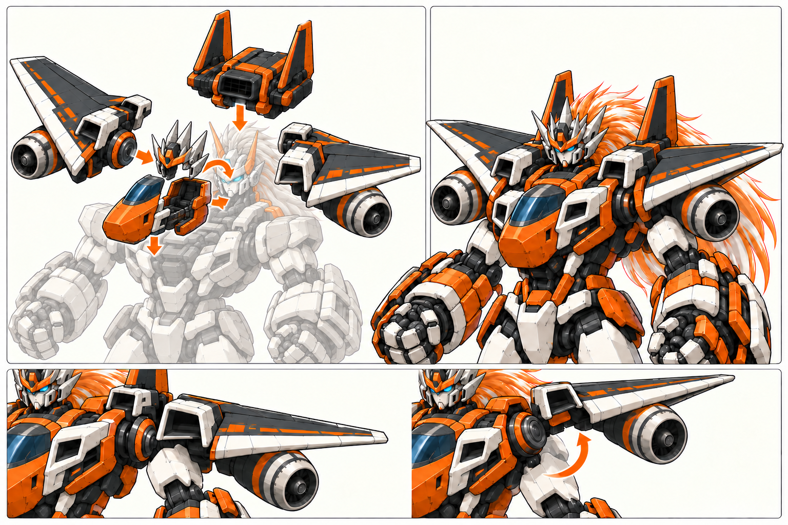
海底列车：车头朝后，壳体左右打开，巨拳在前
一列车由两个相同体系的车头节组成，两个车头位于外端，中央只有一个连接点。拆开后，每节成为一侧臂壳；窗带、橙条和车头在合体后仍能追认。

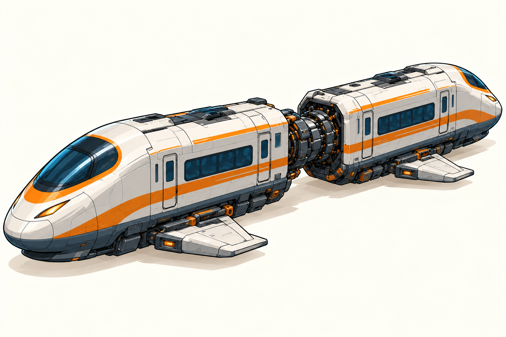

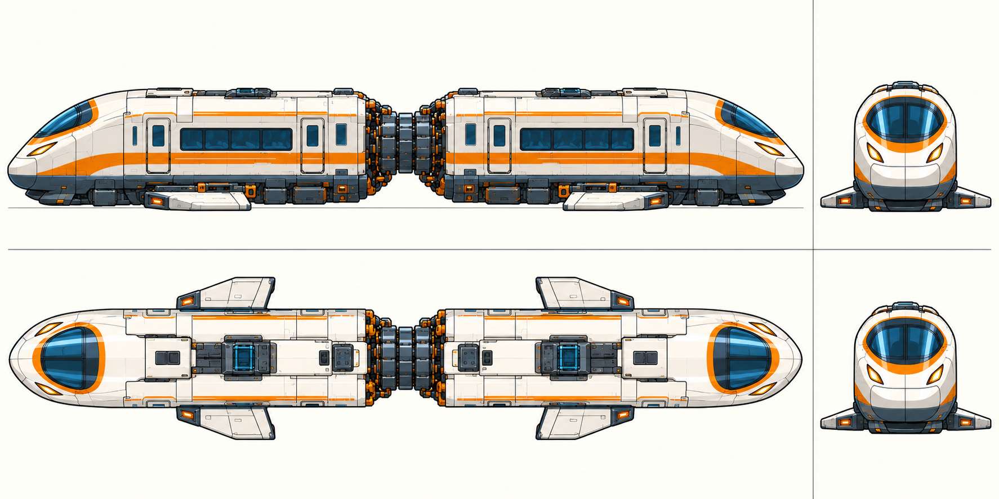
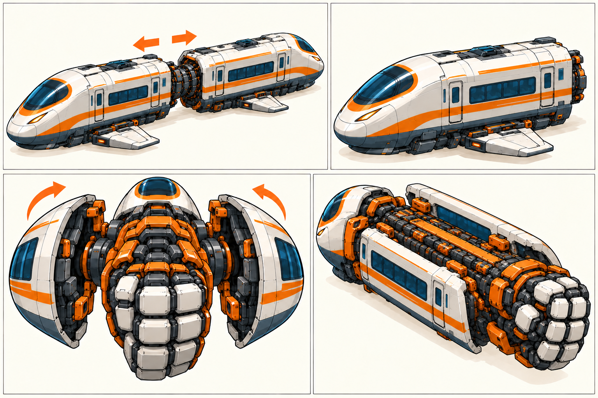
钻探机：外甲包在核心腿上，双腿仍有自己的关节
保留双钻工程机身份，按已选腿足设计整理白甲、橙支架、履带和轮组。车体沿中缝拆成两组，分别进入左右小腿和足部；膝钻始终按各自腿与脚尖的前向配置。

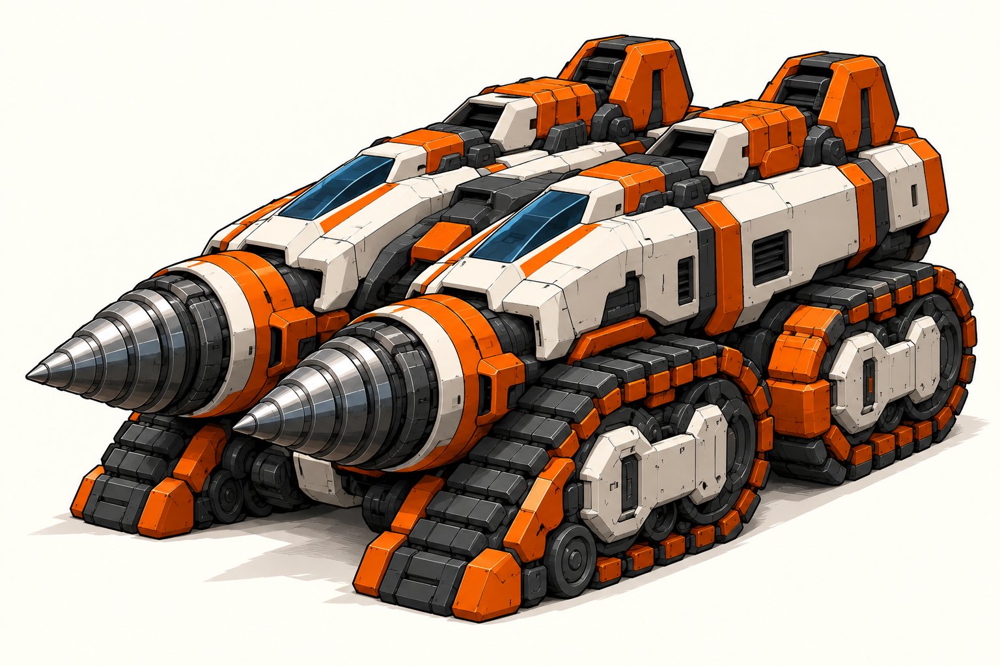

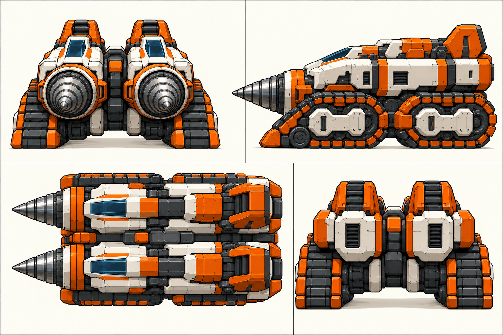
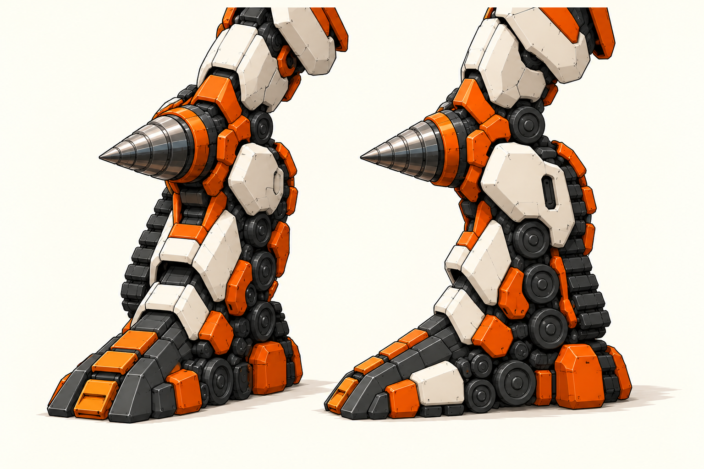
按整机对齐分件，按来源说明装配
- 数量：完整核心一台，轰炸机一架，海底列车一列，钻探机一辆；面罩属于轰炸机内部组件，不是第五台。
- 来源：原头保留，面罩从轰炸机内舱加载。此前核心自行展开冠甲的解释撤回。
- 方向：发动机前进气后排气；列车车头向肘后，拳向前；膝钻跟本腿的前向一致。
- 腿部：R8、R9的错误腿稿停止作为当前依据。R10实际重绘膝到足部，作者检查见膝踝比例改善；用户认可、同模型结构与拆装核对分别保留。
本轮交付的是四机设计图、视图稿及展开对照，等待你确认。这些视图尚非同一模型导出的精确正交投影；后续制作再用同一模型核对尺寸、隐藏面和活动。主工程模型与运行资产保持原状。
当前修订来源与停用旧稿
R9长小腿稿被本次明确否定，旧作者“已按整机对齐”的判断撤回。它不再进入当前制作清单。新稿提示与二维比例约束见本次生图输入及比例施工图；施工图不是新增的用户精确尺寸标准。


R8履带不一致的装配腿和R8未体现面罩来源的头部对照只保留作返工记录，不再作为当前制作依据。轰炸机装配图现同步面罩舱与原头。


R10实际图稿、作者检查、提示与参考来源。本次使用内置 Imagegen 实际重绘腿部；轰炸机内置面罩过程沿用R9。整机、钻机原图及运行资产未改。